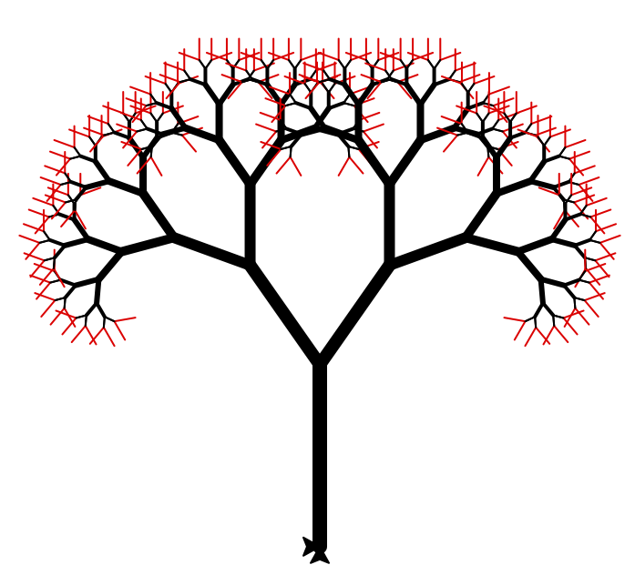
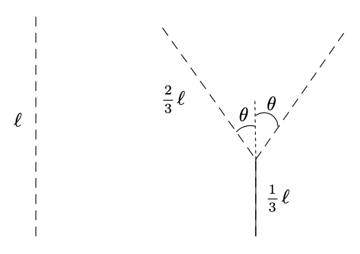

Le mot fractale vient du latin fractus qui signifie brisé. En effet, une figure fractale est un objet géométrique infiniment morcelé des détails sont observables à une échelle arbitrairement choisie.
En zoomant sur une partie de la figure, on peut retrouver toute la figure, on dit qu’elle est auto similaire.
http://www.maths-et-tiques.fr/index.php/detentes/les-fractales
http://fr.wikipedia.org/wiki/Fractalehttp://fr.wikipedia.org/wiki/Fractale
Introduction
Dans le code suivant (qu’il faudra étudier et exécuter) :
-
Quel est le cas de base de l’algorithme récursif ?
-
Où s’effectue l’appel récursif ?
-
Pourquoi le cas de base est-il toujours réalisé ?
|
|
Le flocon de von Koch
La première courbe à tracer a été imaginée par le mathématicien suédois Niels Fabian Helge von Koch, afin de montrer que l’on pouvait tracer des courbes continues en tout point, mais dérivables en aucun.
Le principe est le suivant : on divise un segment initial en trois morceaux, et on construit un triangle équilatéral sans base au-dessus du morceau central. On réitère le processus $n$ fois, $n$ étant appelé l’ordre.
Ordres 0, 1, 2 et 3 de la fractale.
Si on trace trois fois cette figure, on obtient successivement un triangle, une étoile, puis un flocon de plus en plus complexe.
Figures successives (ordre 0, 1, 2 et 4).
Principe de la construction
La méthode de construction utilise un algorithme récursif :
-
À l’ordre 0, il suffit d’appeler une fois la méthode
forwardpour tracer un segment. C’est le cas de base. -
À l’ordre 1, il faut appeler la méthode
forward(4 fois), les méthodesleftetrightpour découper le segment en 4 parties (de même longueur). -
À l’ordre $n \geq 1$, le code ressemble à celui de l’ordre 1, si ce n’est qu’on remplace l’appel de chacune des méthodes
forwardpar le tracé de segments à l’ordre $n-1$. C’est l’appel récursif, on découpe chaque partie de segment en sous-parties.
Travail
- Définir la fonction de signature
|
|
qui dessine un segment de Koch à l’ordre 1, de longueur $l$, à l’aide de l’objet de type Turtle t. Les sous-segments de la figure sont de longueur $l/3$ et les angles
sont de 60 ou 120 degrés.
- Définir la fonction
mainpermettant de tester la fonctionkoch_1.
- Remarque.
-
Les futurs tracés vont nécessiter beaucoup de calculs et l’affichage de nombres points à l’écran. De façon à améliorer la performance,
-
régler la vitesse de la tortue au maximum :
t.speed(0); -
cacher le symbole représentant la tortue à l’écran :
t.hideturtle.
-
- Définir la fonction de signature
|
|
qui dessine à l’écran un segment de
Koch d’ordre 0 ou 1, de longueur $l$, à l’aide de l’objet de type
Turtle t.
Le corps de la fonction doit uniquement gérer les deux cas : $n=0$
et $n=1$ (le cas $n\geq 1$ sera traité dans l’une des prochaines
questions.
-
Modifier la fonction
mainde façon à tester la fonctionkoch. -
Cette partie généralise la fonction
kochau cas $n \geq 2$. Il faut découper chaque segment de droite en sous-parties ; il faut donc remplacer chaque appel de la méthodeforwarddanskochpar un appel de la fonctionkochelle-même :koch(t, n-1, ...).
Trouver par quoi remplacer les … et modifier la fonction. -
Tester
kochla nouvelle fonction pour une longueur de 300 pixels et $n \in [0, 5]$ (au delà de cette dernière valeur, on ne voit plus trop de différences). -
Définir la fonction de signature qui dessine à l’écran un flocon de von Koch, d’ordre $n$ et dont chaque segment à une longueur $l$.
Solution
|
|
Arbre fractal
On peut appliquer le même principe pour construire d’autre fractales visuellement différentes, mais construites sur le même principe.
Présentation
 > Arbre fractal.Par exemple, pour construire un arbre, on part d’un segment, et on applique la transformation présentée ci-dessus à chaque segment de la construction (on refait la transformation $n$ fois pour obtenir un arbre d’ordre $n$) :
 > Base de la construction d'un arbre.Les portions dessinées en pointillées sont celles sur lesquelles on appliquera la transformation à l’ordre suivant (on les appelle les segments non-terminaux). Les portions dessinées en trait plein sont des segments qui ne seront pas transformés (on les appellera les segments terminaux).
Pour transformer un segment non-terminal de longueur $l$, on trace un segment terminal de longueur $l/3$, puis deux segments non-terminaux de longueur $2l/3$ à un angle $\theta$ du premier segment.
Travail
Suivre la même démarche que pour le flocon de Koch pour écrire une fonction de signature qui trace l’arbre, et repositionne la tortue à son point de départ.
-
Dans un premier temps, gérer les ordres 0 et 1 (utiliser la méthode et aucun appel récursif), et tester la fonction. Vérifier en particulier que la tortue est bien revenue à son point de départ à la fin de l’exécution de la fonction dans les deux cas (n = 0 et n = 1).
-
Pour chaque tracé de segment non-terminal, remplacer l’appel à la méthode par un appel récursif à la fonction , et vérifier le comportement de la fonction à différents ordres. Cette fois-ci, une profondeur 10 ou 11 donne un résultat assez joli.
Solution
|
|